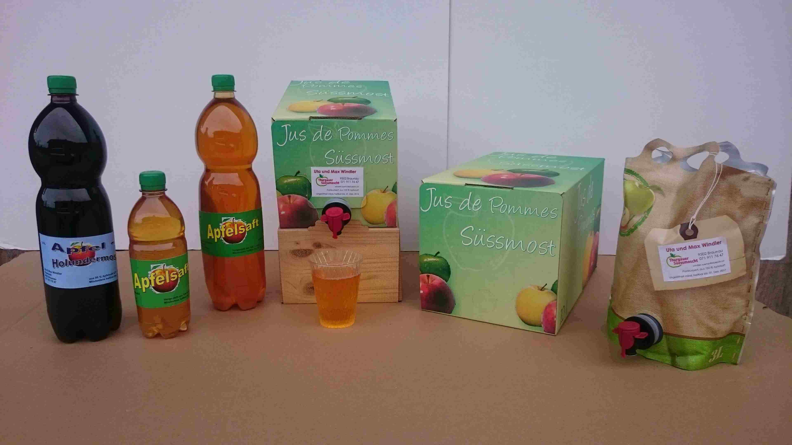
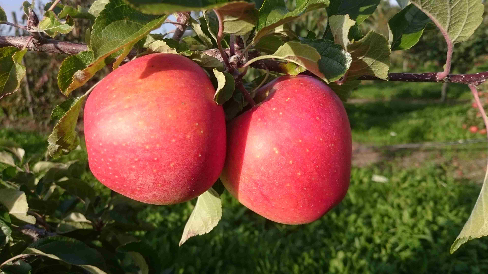
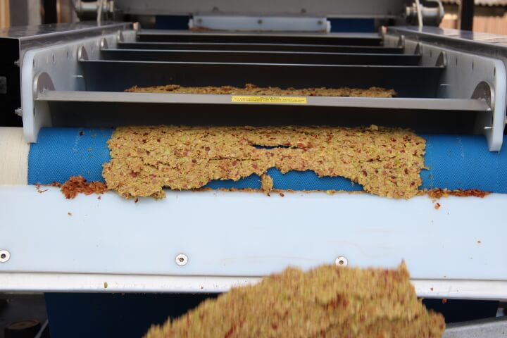
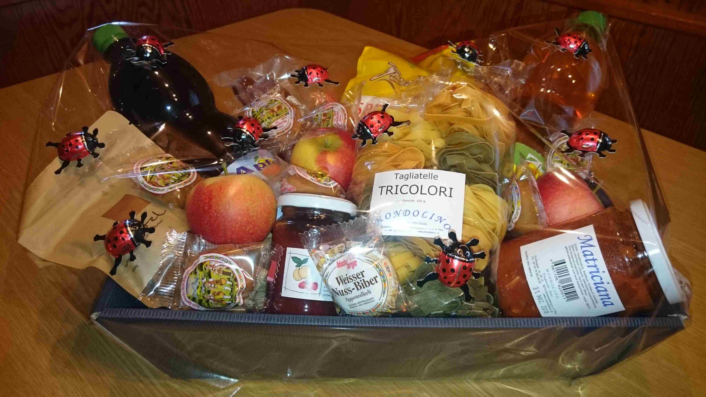

Produkte
Süssmost
Seit über 20 Jahren verarbeiten wir unser Obst zu erfrischendem Süssmost.
Dieser wurde schon mehrfach ausgezeichnet.
Erhältlich ist den folgenden Grössen:
- 1,5 Liter PET-Flasche
- 3 Liter Stehbeutel
- 5 und 10 Liter Bag-in-Box
Als Spezialität erhalten Sie bei uns Holundersüssmost in den Grössen 1,5 Liter PET-Flasche und 3 Liter Bag-in-Box.


Äpfel ab Hof
Im Herbst verkaufen wir Obst ab Hof.
Dazu gehören Äpfel, Birnen und Zwetschgen.
Bei uns reifen Apfelsorten wie Gravensteiner, Boskoop und Jonagold.
Kommen Sie mit und suchen Sie sich Ihren Lieblingsapfel frisch ab Baum.
Kundenmosterei
Gerne pressen wir auch Ihre frischen Äpfel und Birnen.
Sie erhalten Most aus Ihrem eigenen Obst.
Auf Wunsch pasteurisieren wir den Saft und füllen ihn in die gewünschten Gebinde ab.
Kontaktieren Sie uns für einen Termin – Wir freuen uns auf Sie.


Verschenken
Überraschen Sie Ihre liebsten Bekannten oder Ihren treusten Kunden mit einem feinen Thurgauer Süssmost. Nach Ihren Wünschen stellen wir Ihnen zudem ein Geschenkkistli mit unserem Süssmost und anderen feinen Produkten aus der Region zusammen.
Über uns
Wir sind ein Familienbetrieb und halten Swiss Black Angus Weidebeef. Im Herbst betreiben wir eine Kundenmosterei. Daneben verarbeiten wir die meisten Äpfel aus unserer Obstanlage und Hochstämmen selber zu hochwertigem Süssmost.
Verkaufsorte
Unseren Süssmost verkaufen wir ab Hof und in einigen Läden der Region. Wenn Sie uns vor Ihrem Besuch kontaktieren, sind wir gerne für Sie da.
Auszeichnungen
Bereits zwei Mal wurde dieser an der Schweizer Fruchtsaftpremierung mit Gold ausgezeichnet, so auch dieses Jahr.
Kontakt
Bei Fragen oder Bestellungen können Sie uns folgendermassen erreichen: